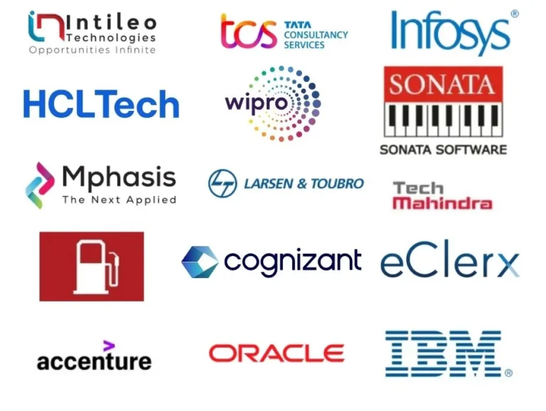
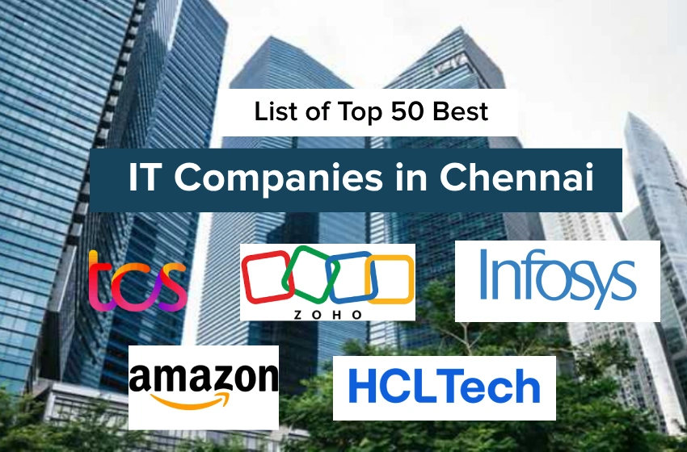

Top Companies
- Tata Consultancy Services
- Fresh Work
- zoho
- Infosys

India’s Information Technology (IT) sector acts as a cornerstone of the national economy, driving massive global digital transformations through services in Artificial Intelligence (AI), cloud computing, and cybersecurity. The country houses a mix of homegrown multinational giants and highly specialized digital engineering firms.Here is high-quality paragraph content covering the top IT companies in India, structured for immediate scannability.
Tata Consultancy Services (TCS) stands as India's largest IT services and consulting enterprise, headquartered in Mumbai. Operating under the prestigious Tata Group conglomerate, the firm commands a massive global footprint across more than 50 countries. TCS delivers enterprise-grade solutions including application development, cloud modernization, data analytics, and digital transformation. It remains a top global employer with a workforce exceeding 600,000 professionals.
HCLTech (formerly HCL Technologies) is headquartered in Noida and serves as a global leader in next-generation technology solutions. The company excels in infrastructure engineering, AIOps, cloud architectures, and dedicated software product development. HCLTech manages end-to-end technology needs for complex global supply chains, manufacturing entities, and large financial networks.
Wipro Limited is a major global technology services provider headquartered in Bengaluru. The company specializes in delivering comprehensive business process services, custom application development, and robust cybersecurity frameworks. Wipro uses advanced AI technologies to power scalable content moderation and system integration platforms for over a million active users globally.
Tech Mahindra Limited is an innovative IT pioneer part of the Mahindra Group, specialized in digital engineering and telecommunications. The firm heavily focuses on 5G networking, Internet of Things (IoT) architectures, and enterprise cloud setups. Tech Mahindra supports diverse sectors, including establishing global content hubs and distribution workflows for prominent international pharmaceutical brands.
Tata Consultancy Services (TCS)The largest IT company in India by market capitalization. Headquartered in Mumbai, it generates over $31 billion annually and employs over 600,000 professionals. TCS excels in large-scale enterprise digital transformation.
Infosys Based in Bengaluru, it is India’s second-largest IT firm, with a revenue run rate of approximately $18 billion. It is highly regarded for its global client base and extensive corporate training facilities in Mysore.

Tata Consultancy Services:Tata Consultancy Services (TCS) is India’s largest IT services exporter and commands a massive footprint in Chennai, highlighted by its signature, castle-style campus at the Siruseri IT Park. As a global leader in IT consulting and business solutions, TCS partners with the world's largest businesses to drive digital transformation. The Chennai development centres focus heavily on advanced cloud architecture, cybersecurity systems, enterprise agility, and scalable generative AI platforms for global clients across banking, retail, and healthcare sector.
Fresh Work:provides cloud-based software solutions designed to optimize customer service, IT service management (ITSM), and sales/marketing automation. Their products are built to be easy to use, quick to set up, and highly scalable for companies of all sizes.
zoho: zoho Corporation is a homegrown pioneer that has turned Chennai into the "SaaS Capital of India," operating its expansive global headquarters just outside the city in Estancia. Unlike traditional IT service providers, Zoho is a product-based powerhouse that builds a comprehensive cloud software suite to run entire businesses. Serving over 100 million users globally, Zoho's Chennai teams design and engineer widely used software applications for customer relationship management (CRM), corporate finance, human resources, and low-code app development.
Infosys:Headquartered in Electronic City, Infosys is a cornerstone of Bengaluru's identity as a global tech hub. As a pioneer in next-generation digital services and consulting, the company helps clients across 56 countries navigate their digital transformation journeys. Driven by its AI-first core, Infosys specializes in cloud migration, advanced data analytics, and scalable enterprise applications, making engineering talent and cutting-edge business solutions.

:GoogleGoogle’s Bangalore operations represent its largest engineering presence outside the United States, focusing heavily on core product development, cloud services, and advanced artificial intelligence. Located at RMZ Infinity on Old Madras Road, this hub brings together elite talent in software engineering, data science, and product management to drive global innovations.
Microsoft :Microsoft operates one of its primary global R&D centers across multiple campuses in Bangalore's major tech corridors, pioneering advancements in cloud infrastructure and enterprise software. The workforce at this location builds next-generation distributed systems and machine learning models that power the company's global enterprise suite.
AmazonAmazon maintains a massive footprint in Bangalore with major development centers at the World Trade Center in Malleswaram and the Bagmane Constellation Business Park. This strategic hub fuels global engineering for foundational p
FlipkartFlipkart stands as India's premier homegrown e-commerce pioneer, anchoring its sprawling corporate headquarters along Bangalore's Outer Ring Road. The company focuses entirely on localized marketplace infrastructure, supply chain analytics, and fintech integrations tailored specifically to the Indian consumer base.

Microsoft: Microsoft’s presence in Bengaluru is anchored heavily in its massive campus at Outer Ring Road (ORR) and offices in Lavelle Road. The Bengaluru facility is a crucial arm of the Microsoft India Development Center (MSIDC), where teams build core technologies for Microsoft Azure, artificial intelligence, and developer tools.
Google: Google occupies prominent, state-of-the-art office spaces across Bengaluru, including locations in Bagmane Constellation Business Park and RMZ Infinity. The city serves as a primary hub for Google Cloud engineering, Android ecosystem development, and cutting-edge AI research
Deloitte: Deloitte operates large-scale US India (USI) offices in Bengaluru, prominently located in tech parks like Manyata Tech Park and Yelahanka. The Bengaluru branches focus heavily on advanced technology consulting, cloud architecture implementation, cybersecurity strategies, and enterprise data analytics for Fortune 500 clients globally.
Tech Mahindra: Tech Mahindra maintains a highly expansive footprint in Bengaluru, featuring massive delivery centers in Electronic City and ITC Green Centre. The Bengaluru offices focus heavily on 5G telecommunication engineering, internet of things (IoT) solutions, aerospace engineering services, and integrated digital transformation projects.
Finding the right IT company requires a systematic approach that balances market research with targeted networking. Instead of relying solely on generic job boards, tech professionals find the best opportunities by identifying companies based on their tech stacks, engineering culture, and growth stages. By categorizing target employers and leveraging specialized developer platforms, you can look past public job openings and tap directly into teams that actively need your specific skill set.
The digital tech landscape requires platforms that cater specifically to developers, engineers, and product teams. LinkedIn stands out as the premier network for professional branding, direct recruiter outreach, and corporate IT job postings globally. For specialized engineering and developer roles, platforms like Dice and Wellfound (formerly AngelList Talent) offer direct access to tech startups and major product enterprises without the noise of non-tech listings. Additionally, for the Indian tech market, Hirist serves as a dedicated portal focusing exclusively on premium software engineering, DevOps, data science, and IT management roles.
For large-scale enterprise companies, system integrators, and service-based IT giants, traditional regional job boards remain highly effective. Naukri.com is the dominant platform in India, utilizing powerful search algorithms that connect millions of IT professionals with tech recruitment agencies and multinational corporations. Globally, Indeed and ZipRecruiter function as massive aggregators that pull millions of IT listings from corporate sites, making it easy to filter roles by programming languages, remote flexibility, and structural tech stacks
Many of the most lucrative and stable IT roles are never broadcasted on public third-party job boards. Tech giants like Google, Microsoft, and Meta, alongside global consulting firms like Accenture and Deloitte, list their priority vacancies directly on their internal career web pages. Job seekers should build customized talent profiles directly within these corporate systems and set up automated alerts for their target engineering departments, ensuring they are among the very first to apply when a new technical project scales up.
To catch the eye of top recruiters and beat automated applicant tracking systems, you must fully optimize your digital profile. Start by crafting a professional headline that clearly states your exact target role and core expertise, rather than using generic phrases like "Seeking Opportunities." Write a crisp, three-sentence summary that functions as your elevator pitch, detailing your years of experience, primary skills, and career goals. Within your work history section, avoid simply listing your daily duties. Instead, start every bullet point with a strong action verb—such as managed, developed, or optimized—and quantify your achievements with clear metrics, like percentages or revenue figures, to prove your direct impact.
Submitting your application online is only the first step; proactive networking is what secures interviews. Once you apply, search for the company on professional networks like LinkedIn to locate the hiring manager or internal recruiter. Send them a polite, brief message expressing your enthusiasm for the specific role and attaching your resume. Keep a detailed spreadsheet to track the company name, job title, date applied, and communication history for every application. If you have not received an update after seven to ten business days, send a professional follow-up email to check on the status of your application and reiterate how your skills align with the company's needs.